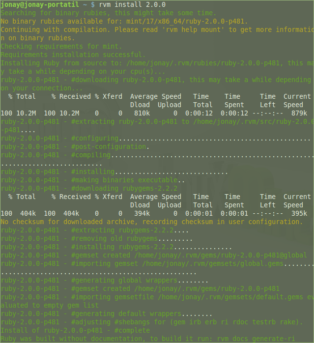

Instalaremos la versión rvm de Ruby. Podemos encontrar toda la documentación en http://rvm.io/
Para instalarlo ejecutaremos el comando siguiente (hay que hacerlo como usuario sin privilegios):
\curl -sSL https://get.rvm.io | bash -s stable
Si no tiene el programa curl instalado, deberá hacerlo antes.
sudo apt-get install curl
Después de haber instalado rvm, instalamos Ruby. En mi caso, la versión 2.0.0.
rvm install 2.0.0

Tenemos que añadir una línea al fichero ~/.bash_profile con el siguiente comando:
echo "source $HOME/.rvm/scripts/rvm" >> ~/.bash_profile
Ahora podemos indicar que se haga uso de la versión 2.0.0 de Ruby.
rvm use 2.0.0
Como vemos en la imagen siguiente, es probable que antes de ejecutar el comando anterior ejecutemos: /bin/bash --login
Para instalar git:
sudo apt-get install git
Una vez instalado procederemos a configurarlo.
Lo primero es añadir un nombre y un correo electrónico.
git config --global user.name "Nombre Apellido"
git config --global user.email "tu@correo.com"
Seguidamente, configuraremos git para que no sea necesario introducir la contraseña cada vez que hagamos una actualización.
git config --global credential.helper cache
También haremos que todos los cambios se empujen siempre en el repositorio git.
git config --global push.default "matching"
Y por último, configuraremos git para que se eviten los commits innecesarios.
git config --global branch.autosetuprebase always
Si queremos ver la configuración de git, ejecutaremos el comando siguiente:
git config --list
Para instalar una gema, lo haremos con el comando:
gem install "nombre_gema"
Siguiendo el comando anterior, instalaremos la gema sinatra.
gem install sinatra
También instalaremos la gema twitter.
gem install twitter